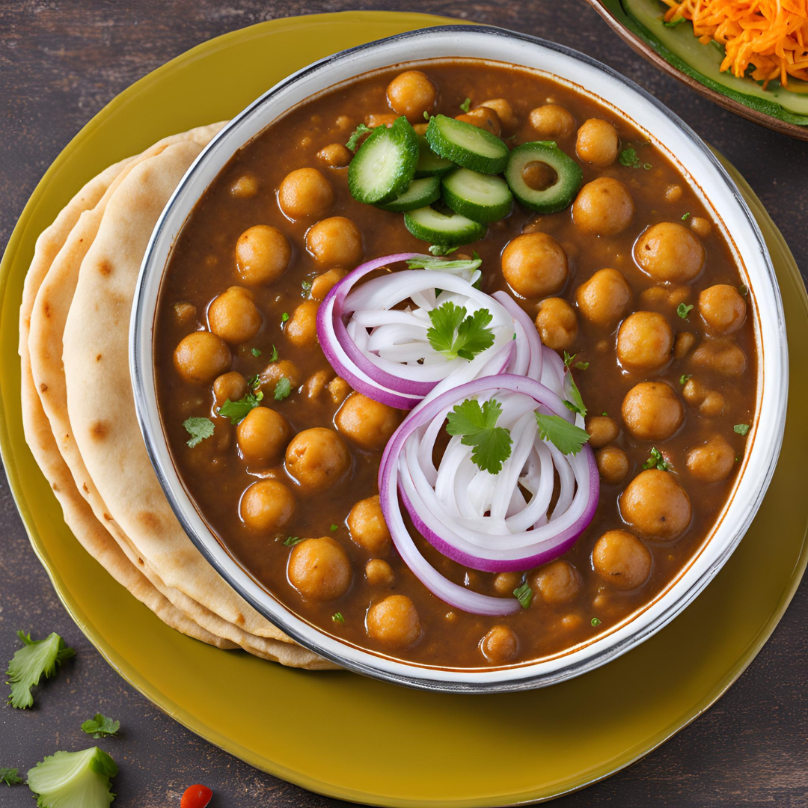

Paneer Butter Masala
Servings: 4
Ingredients:
- 250g paneer
- 3 tbsp butter
- 1 cup onion
- 2 cups tomato puree
- 1 tbsp ginger-garlic
- 1 tsp chili powder
- 1 tsp garam masala
- ½ cup cream
- Salt, coriander
Instructions:
- Cut and optionally fry paneer.
- Sauté onion in butter.
- Add ginger-garlic; cook.
- Add tomato puree; cook.
- Add spices; mix.
- Add paneer; cook.
- Add cream; simmer.
- Garnish with coriander.
Serve: Naan or rice.

Chole Bhature
Servings: 4
Ingredients:
- 2 cups chickpeas
- 2 onions
- 2 tomatoes
- 1 tbsp ginger-garlic paste
- 2 tsp chole masala
- 4 cups flour
- 1/2 cup yogurt
- Oil, salt
Instructions:
- Cook chickpeas (20 mins).
- Sauté onions and ginger-garlic.
- Add tomato puree; cook.
- Mix in masala and chickpeas.
- Knead flour and yogurt; rest.
- Roll and fry bhature.
Serve: Hot with Chole.
Masala Dosa
Servings: 4
Ingredients:
- 1 cup rice
- ½ cup urad dal
- Salt
- Oil
- 2 mashed potatoes
- 1 chopped onion
- 1 tsp mustard seeds
- ½ tsp turmeric
Instructions:
- Soak rice, dal, fenugreek 6-8 hrs.
- Grind; ferment overnight.
- Add salt; spread batter on skillet.
- Cook; add filling, fold.
Serve: With chutney.
Baby Corn Manchurian
Servings: 4
Ingredients:
- 250g baby corn
- 1 cup all-purpose flour
- 2 tbsp cornflour
- 1 tbsp ginger-garlic paste
- 2 tbsp soy sauce
- 1 tbsp chili sauce
- Mixed bell peppers
- Salt, oil for frying
Instructions:
- Cut baby corn.
- Mix flours, ginger-garlic, and salt.
- Dredge baby corn; deep fry until golden.
- Sauté peppers; add sauces.
- Combine with baby corn; toss.
Serve: Hot, with rice or noodles.
Veggie Cheese Pizza
Servings: 4
Ingredients:
- 1 pizza base
- 1 cup pizza sauce
- 1 cup mozzarella cheese
- 1/2 cup bell peppers, chopped
- 1/2 cup mushrooms, sliced
- 1/4 cup onions, sliced
- 1 tsp oregano
- Salt, to taste
Instructions:
- Preheat oven to 220°C (428°F).
- Spread sauce on base; add cheese and veggies.
- Bake for 15-20 minutes; cool for 5 minutes.
Serve: Enjoy with extra toppings.
Bhel Puri
Servings: 4
Ingredients:
- 2 cups puffed rice
- 1 cup sev
- 1 cup onions, chopped
- 1 cup tomatoes, chopped
- ½ cup boiled potatoes, cubed
- 2 tbsp tamarind chutney
- 2 tbsp green chutney
- 1 tsp chaat masala
- 2 tbsp coriander, chopped
- Salt, lemon juice to taste
Instructions:
- Combine puffed rice, sev, onions, tomatoes, and potatoes.
- Add chutneys, mix in spices.
- Garnish with coriander; serve immediately.
Serve: With fresh coriander garnish.